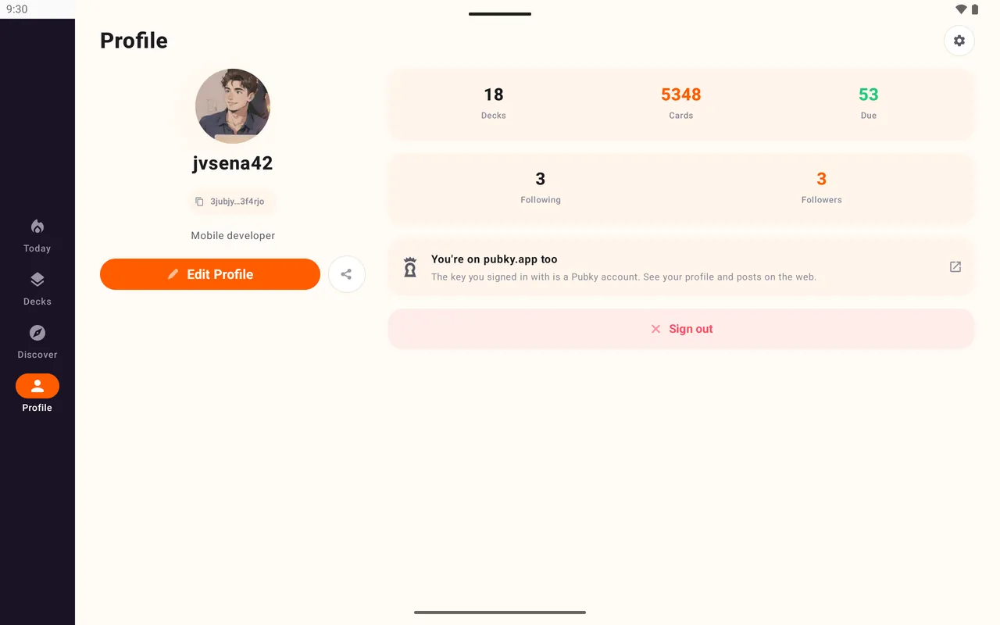

Comparte un enlace
Cada mazo tiene un enlace web que se abre en la app.
Para docentes y grupos de estudio
Publica un mazo de flashcards una vez. Tus alumnos abren el enlace y lo estudian con repetición espaciada en su propio teléfono.
Gratis. Sin anuncios. Código abierto.

Cada mazo tiene un enlace web que se abre en la app.
Quien lo sigue recibe tus cambios. Quien lo clona tiene una copia que puede modificar.
Los mazos de idiomas se leen en voz alta y revisan la pronunciación.
Sin analítica y sin recopilar datos de los alumnos.
Escribe las tarjetas, pega una lista de una hoja de cálculo, importa un archivo de Anki o pídele a una IA que las escriba.

Tu perfil muestra todos los mazos que publicas, así que un solo enlace cubre todo el curso.

No. Entran con una clave Pubky o crean una cuenta en la app.
No. El progreso es de cada alumno y no hay panel para docentes.
Ya pueden abrir la página del mazo en el navegador, y podrán estudiarlo cuando salga la app de iOS.
Con unos minutos al día basta.